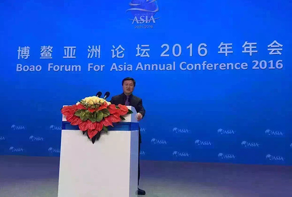

大好河山公司、万户候国际旅行社公司董事长黄国林先生应邀参加《博鳌亚洲论坛2016年年会》留念
2016年1月28日大好河山乔迁庆典暨新春年会在大好河山资产管理有限公司新址——宝蓝金融创新中心2层隆重举行，公司新老会员共计600余人与我公司全体员工欢聚一堂，观看演出。大好河山资产管理有限公司董事长黄国林先生携公司顾问一同参加了此次年会，并在年会开场致辞。黄国林董事长就我公司2015年的工作进行简单总结，并对新老会员进行公司未来发展规划的简介，要在2015年酒店、旅游、养老业务不断发展壮大的基础上，在新的一年里与中国建设银行进行合作，开拓金融等新的服务领域。年会邀请了深受广大老年朋友喜爱的表演艺术家王馥荔、女高音歌唱家韩芝萍、国家一级演员戴月琴、京剧表演艺术家朱宝光等，为新老客户奉上了一场精彩纷呈的演出。《双脚踏上幸福路》、《祖国慈祥的母亲》、《杨三姐》、《空城计》等一首首耳熟能详的歌曲将年会推向高潮，给现场新老会员呈现了一场精神世界的饕餮盛宴。年会上，我公司特拟定春节特别优惠政策，以回馈新老会员多年的支持与厚爱。年会的最后公司为参加此次年会的新老会员提供礼物一份，致以新春的祝福。大好河山资产管理有限公司自即日起，正式搬迁至西直门外大街辛137号宝蓝金融创新中心2层，董事长黄国林携全体员工将秉承全方位服务老年人的宗旨，以更专业更优质的服务奉献新老客户。
 企业企业新闻企业新闻企业新闻企业新闻新闻
企业企业新闻企业新闻企业新闻企业新闻新闻